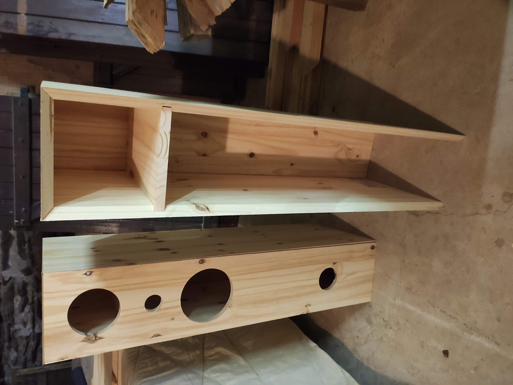
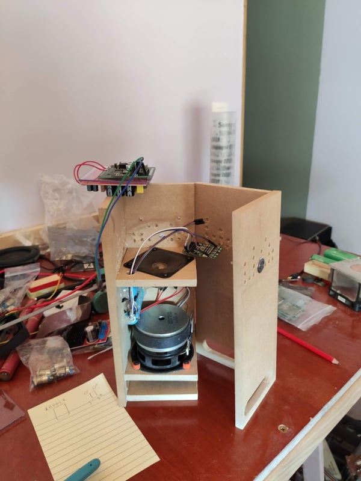
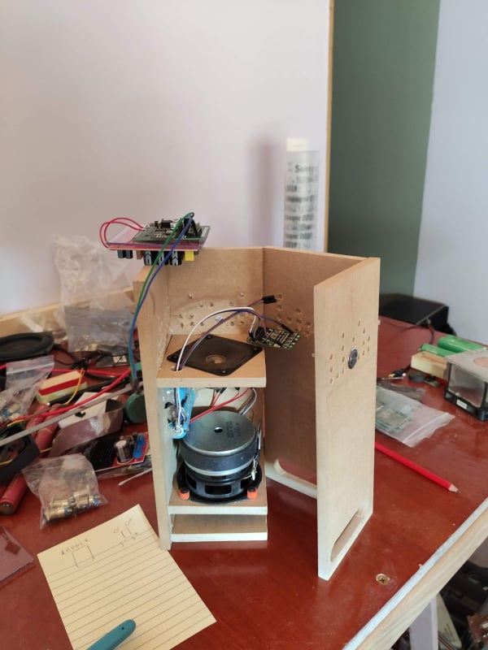
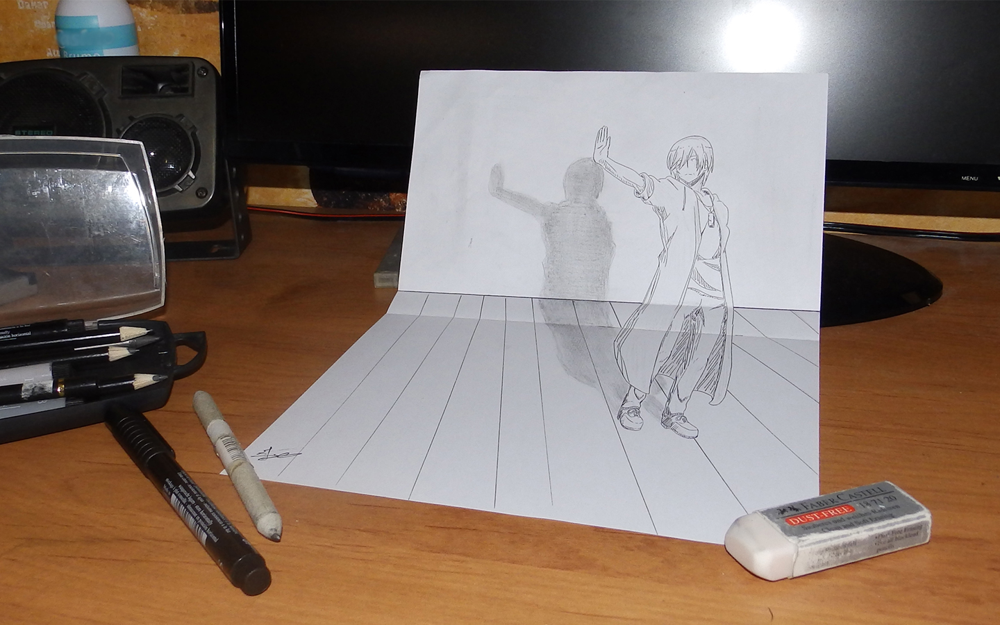
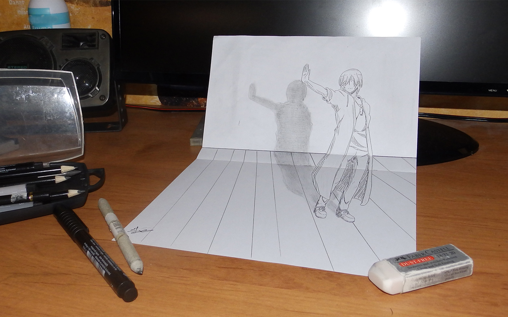
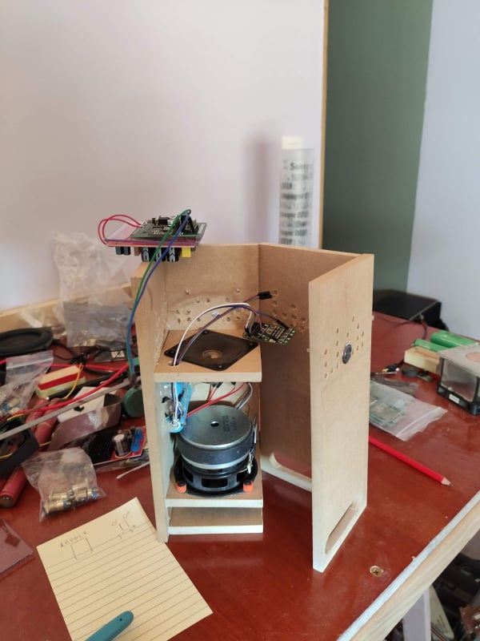
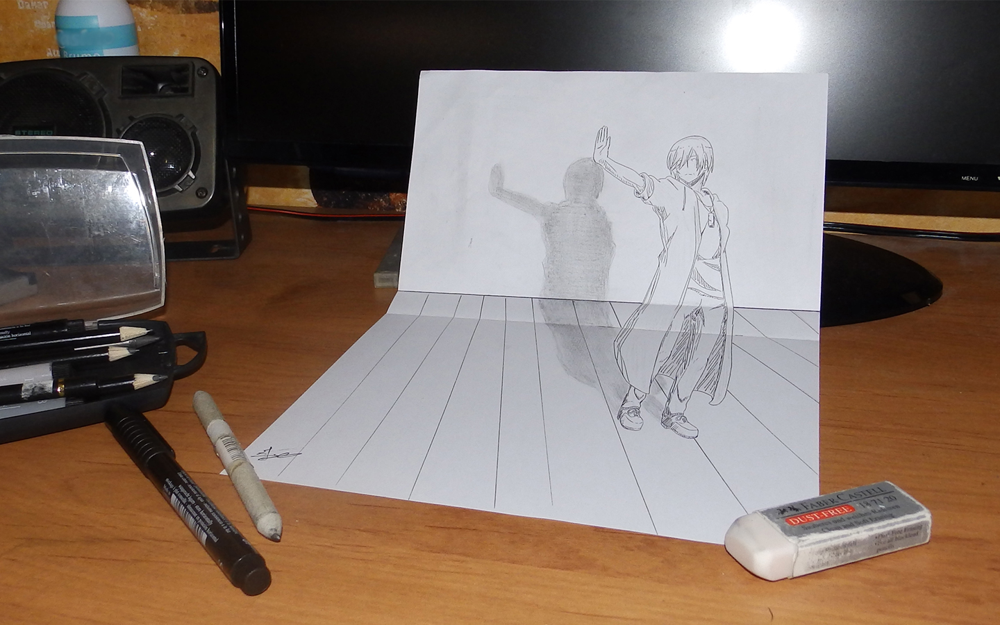
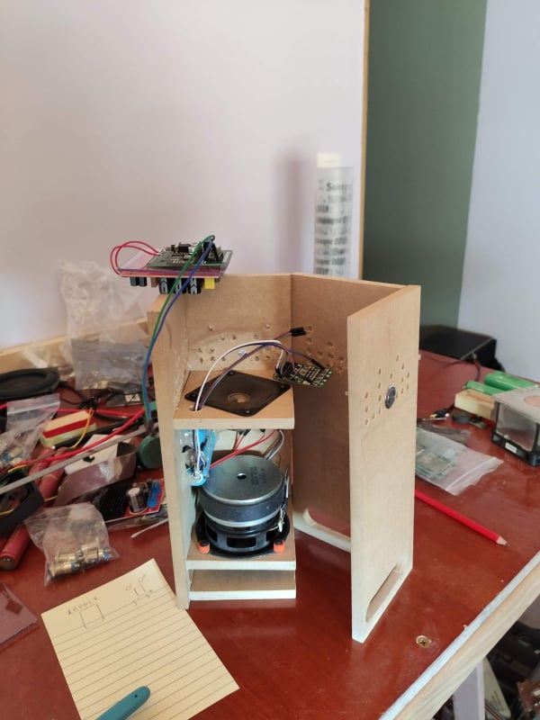
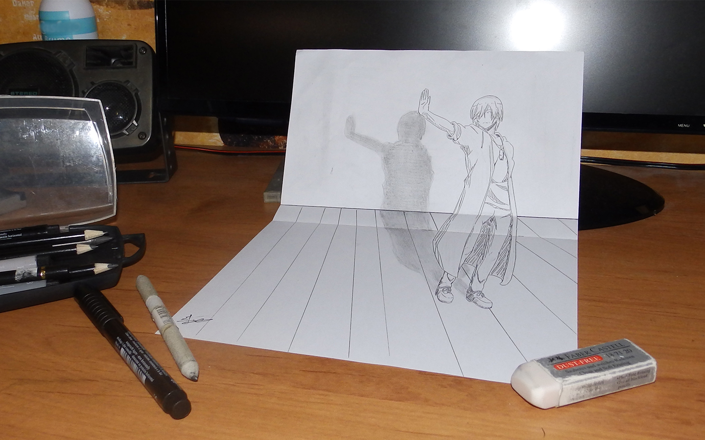

Aperçu

 

 



×

Bonjour, je m'appelle Julien CHAVAS, je suis un étudiant en dernière année d'école d'ingénieur à Télécom Saint-Étienne en parcour Électronique et Télécommunication. Je suis passé par la case IUT avant cette école, avec un DUT Génie Électrique et Informatique Industrielle (GEII). Je suis un passioné d'électronique, ma passion est de fabriquer des enceintes connectées. Donc de la conception électronique, à la conception et le travail du bois majoritairement. Je suis aussi un joueur membre d'une structure [IRAE], prenant de multiples casquette de joueur, à commentateur et jusqu'à hébergeur de serveur de jeu.
Je suis originaire de la campagne de Loire-Sur-Rhône dans le Rhone, Le PACALON.
Ce site web à été dévelloper en première année d'école d'ingénieur en temps que projet décourverte des langages de programmation du web. Il n'est donc pas d'une complixité extreme. Cette page est l'accueil, elle possède un formulaire de conctact (pour l'instant factice). On peut retrouver un menu en haut qui permet de naviguer entre les pages du site.
Ensuite, nous avons la page de mon CV réécrit en HTML. (à mettre à jour)
Cette page est plus ici sous la forme d'un test, pour afficher tout type de chose. Comme une vidéo, des liens de téléchargement, un affichage de code (va êtres modifié pour montrer mes différents projets réalisés au seins de mon parcour scolaire)
Cette page regroupe toutes mes créations personnelles récentes. (à mettre à jour)

